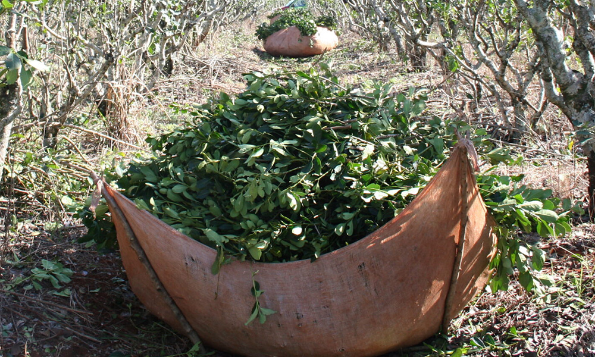
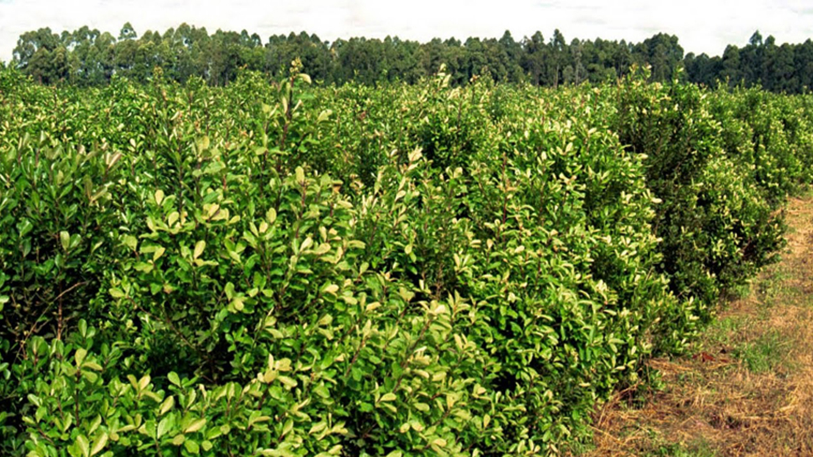

Experience the Best of South America with Mate Tostado
Mate Tostado is a variation of the traditional South American beverage made from Yerba Mate plant. The leaves are roasted at a high temperature, giving them a distinct smoky flavor and a more robust aroma. This variation of Yerba Mate is becoming increasingly popular among enthusiasts and connoisseurs of the drink.
We are a small, family-owned business, dedicated to preserving traditional methods of harvesting and roasting the leaves to ensure the best flavor and quality. We only use hand-picked leaves, and carefully monitor the roasting process to achieve the perfect balance of smokiness and aroma. Our small company has become a sought-after product among Yerba Mate enthusiasts
